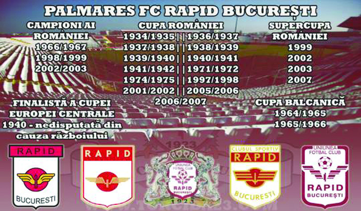

Palmaresul clubului Rapid București
Titluri și performanțe
- 3 titluri de campioană a României: 1967, 1999 şi 2003
- 14 ori vicecampioană a României: 1937, 1938, 1940, 1941, 1949, 1950, 1964, 1965, 1966, 1970, 1971, 1998, 2000 şi 2006
- 7 clasări pe podium (locul 3): 1948, 1961, 1968, 1996, 2002, 2004 şi 2008
- 13 Cupe ale României: 1935, 1937, 1938, 1939, 1940, 1941, 1942, 1972, 1975, 1998, 2002, 2006 si 2007
- 4 Supercupe ale României: 1999, 2002, 2003 si 2007
- Câștigătoare a Cupei Basarabiei (1942), un campionat național nerecunoscut însă oficial
- Câștigătoare a Cupei Primăverii (1957), altă întrecere la nivel național, nerecunoscută oficial, menită să înlesnească trecerea de la un sistem competițional (primăvară-toamnă) la altul (toamnă-primăvară)
- Câștigătoare a Cupei Ligii (1994)